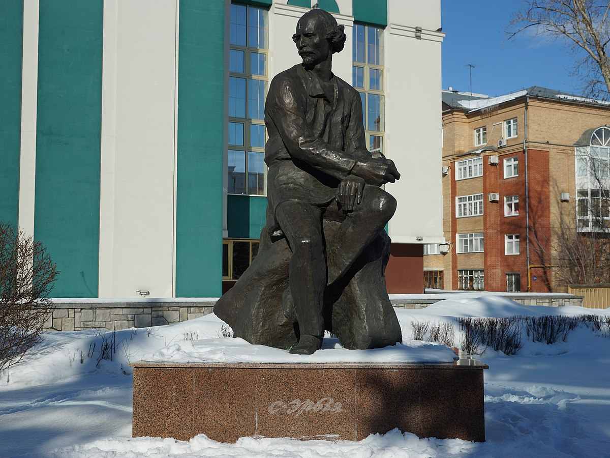

Ерзя
Скульпторы Н. М. Филатов, Г. М. Филатов, архитектор В. В. Годунов.
Памятник великому скульптору открыт к 120-летию со дня его рождения 4 ноября 1996 г.
Степан Дмитриевич Эрьзя (Нефедов) (1876–1959) родился в с. Баево Алатырского уезда Симбирской губернии (ныне Ардатовский район Республики Мордовия) в крестьянской семье. Эрзянская культура и христианские традиции, которых придерживались в семье, стали основой формирования его представлений о мире и оказали большое воздействие на все его творчество.